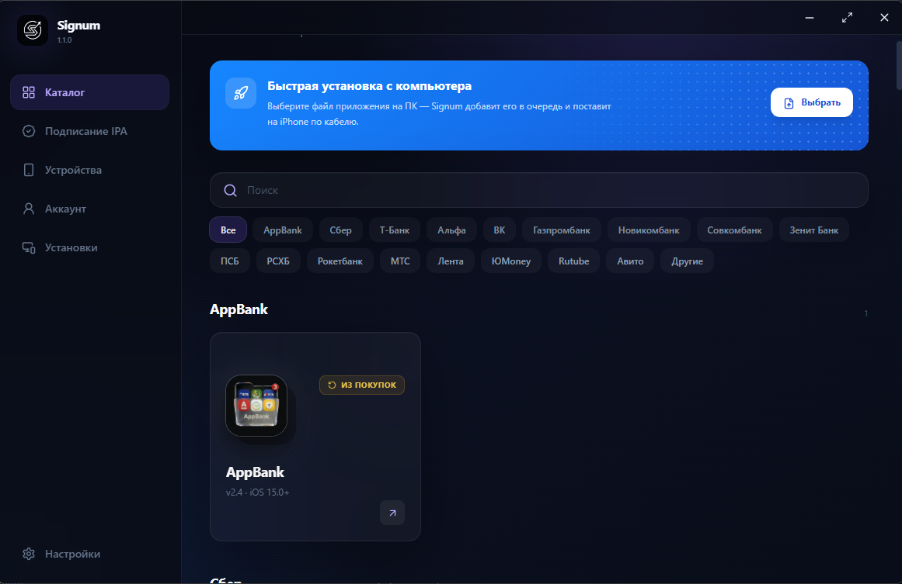

01
Единый поиск
Введите название, сокращение, ссылку из App Store или имя разработчика. Сначала покажутся проверенные приложения из каталога, ниже — App Store. Одно и то же приложение не появится дважды.
v1.2.3 Windows · macOS · Linux · Android
Signum находит приложение в каталоге или App Store, подбирает версию под вашу iOS и ставит её на телефон. Даже если в магазине его уже нет — из покупок Apple ID.
02 Возможности
Введите название, сокращение, ссылку из App Store или имя разработчика. Сначала покажутся проверенные приложения из каталога, ниже — App Store. Одно и то же приложение не появится дважды.
Все версии приложения, которые уже были на вашем Apple ID. Signum подскажет, какие подойдут вашему iPhone.
Сохраните приложение файлом в нужную папку или поставьте сразу на телефон — всё в один клик.
Переключайтесь между аккаунтами, меняйте страну магазина и смотрите, на каком аккаунте приложение уже куплено.
Нужны только телефон на Android и переходник OTG: тот же каталог, тот же вход в Apple ID и установка прямо на iPhone.

04 Как это работает
Пароль отправляется только в Apple и нигде не сохраняется. Код подтверждения вводится в том же окне.
В каталоге или App Store. Signum сам предложит версию, которая подойдёт вашему iPhone.
Подключите кабель, нажмите «Доверять» на телефоне — и приложение установится. Ход установки видно прямо в Signum.
05 Скачать
Обновления приходят внутри приложения — заходить сюда снова не придётся.
Скачать для WindowsWindows 10/11 · версия 1.2.3
У каждого файла есть «отпечаток» SHA-256. Если отпечаток скачанного файла совпадает с указанным здесь — файл настоящий и не повреждён.
WindowsGet-FileHash файл.exe
macOSshasum -a 256 файл.dmg
Linuxsha256sum файл.AppImage
Signum пока не прошёл платную проверку Apple (нотаризацию), поэтому при запуске скачанного .dmg macOS пишет, что «не может проверить» приложение. Проще всего поставить через Терминал — тогда этого окна не будет.
curl -fsSL https://appbank.pw/signum/install.sh | bash
Команда скачивает Signum с нашего сервера и сверяет отпечаток SHA-256. Пароль Mac попросит, только если старую версию нельзя заменить без прав администратора.
06 Вопросы
Да. Приложения скачиваются из App Store на ваш Apple ID, а снятые с продажи — из его покупок. Пароль передаётся только Apple и не сохраняется.
Для установки на iPhone — да: обычный USB-кабель к компьютеру или переходник OTG к Android-телефону. На iPhone нажмите «Доверять».
Да. Выберите «Скачать файл» — Signum сохранит его в папку, которую вы укажете в настройках.
Если оно когда-то было на вашем Apple ID, Signum найдёт его в покупках и покажет все доступные версии. А банковские приложения есть в каталоге Signum.
Так macOS встречает приложения без платной нотаризации Apple. Проще всего установить Signum через Терминал одной командой — тогда окна не будет. Если уже скачали .dmg: правой кнопкой по Signum в «Программах» → «Открыть», или Системные настройки → Конфиденциальность и безопасность → «Всё равно открыть». Пошагово — в разделе загрузки.
В Telegram-канале @appbankRU.